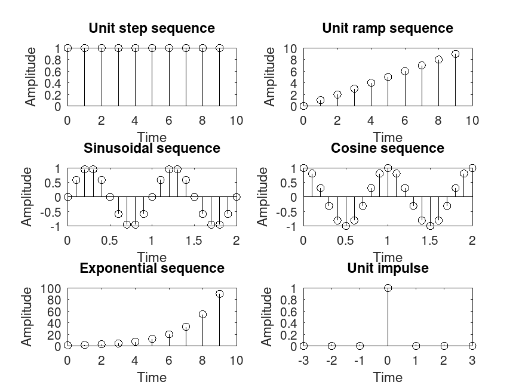

Code
# # Program for unit step sequence # # Enter the length of unit step sequence(N)= 10 # clc; N=input('Enter the length of unit step sequence(N)= '); n=0:1:N-1; y=ones(1,N); subplot(3,2,1); stem(n,y,'k'); xlabel('Time') ylabel('Amplitude') title('Unit step sequence'); # # Program for unit ramp sequence # # Enter the length of unit ramp sequence(N1)= 10 # N1=input('Enter the length of unit ramp sequence(N1)= '); n1=0:1:N1-1; y1=n1; subplot(3,2,2); stem(n1,y1,'k'); xlabel('Time'); ylabel('Amplitude'); title('Unit ramp sequence'); # # Program for sinusoidal sequence # # Enter the length of sinusoidal sequence(N2) = 3 # N2=input('Enter the length of sinusoidal sequence(N2)='); n2=0:0.1:N2-1; y2=sin(2*pi*n2); subplot(3,2,3); stem(n2,y2,'k'); xlabel('Time'); ylabel('Amplitude'); title('Sinusoidal sequence'); # # Program for cosine sequence # # Enter the length of the cosine sequence(N3) = 3 # N3=input('Enter the length of the cosine sequence(N3)='); n3=0:0.1:N3-1; y3=cos(2*pi*n3); subplot(3,2,4); stem(n3,y3,'k'); xlabel('Time'); ylabel('Amplitude'); title('Cosine sequence'); # # Program for exponential sequence # # Enter the length of unit step sequence(N) = 10 # # Enter the value of the exponential sequence(a) = 0.5 # N4=input('Enter the length of the exponential sequence(N4)= '); n4=0:1:N4-1; a=input('Enter the value of the exponential sequence(a)='); y4=exp(a*n4); subplot(3,2,5); stem(n4,y4,'k'); xlabel('Time'); ylabel('Amplitude'); title('Exponential sequence'); # # Program for unit impulse # n=-3:1:3; y=[zeros(1,3),ones(1,1),zeros(1,3)]; subplot(3,2,6); stem(n,y,'k'); xlabel('Time'); ylabel('Amplitude'); title('Unit impulse');
Results